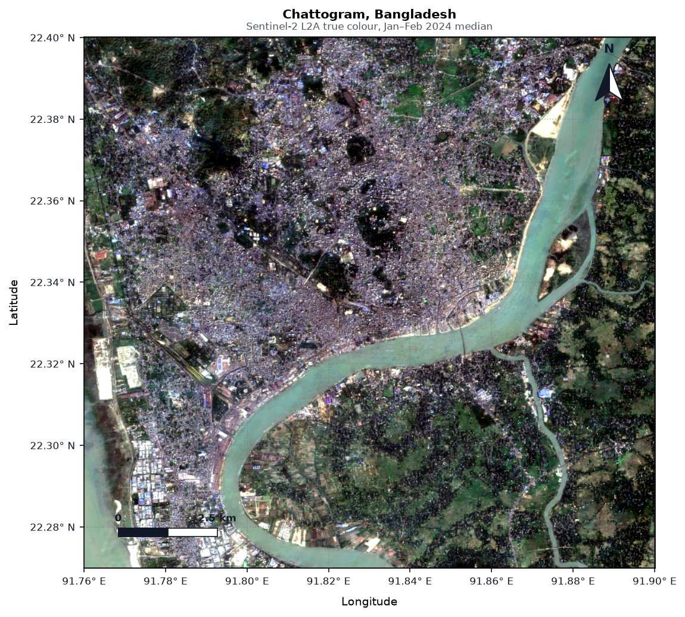
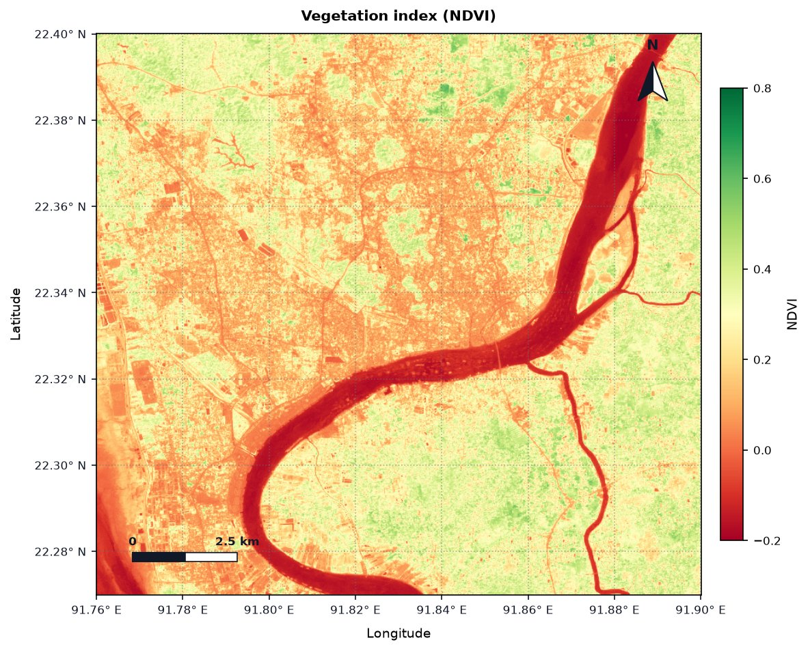
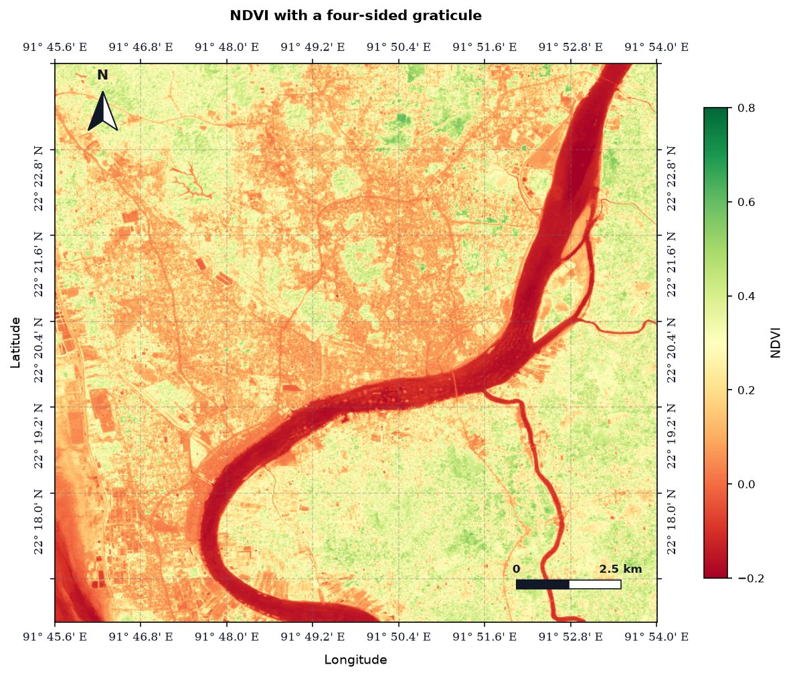
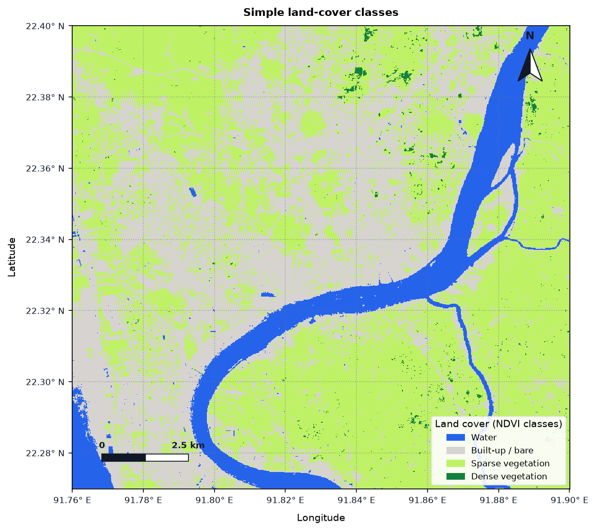
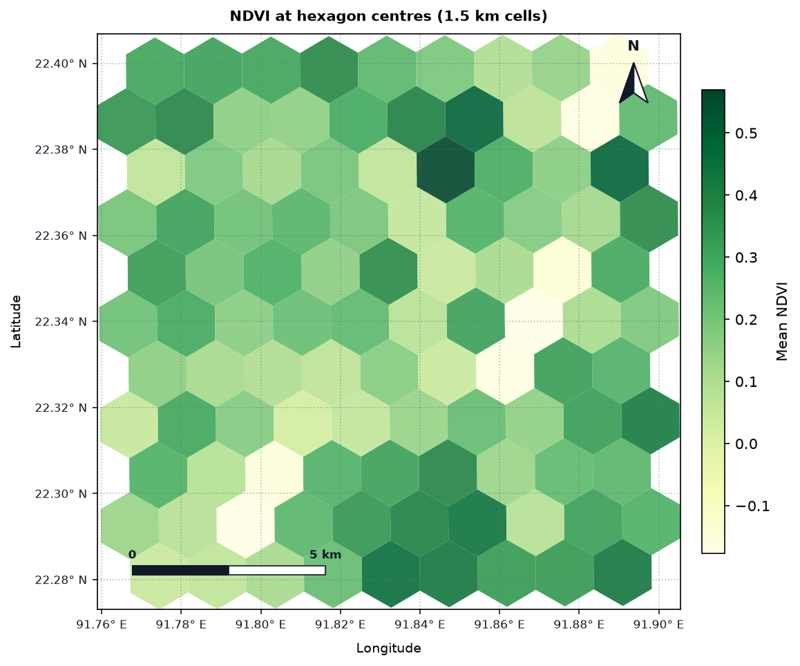
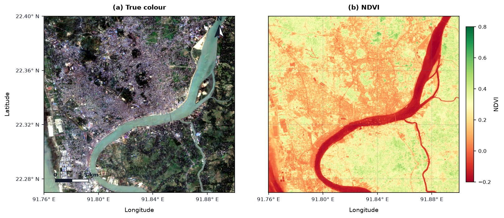
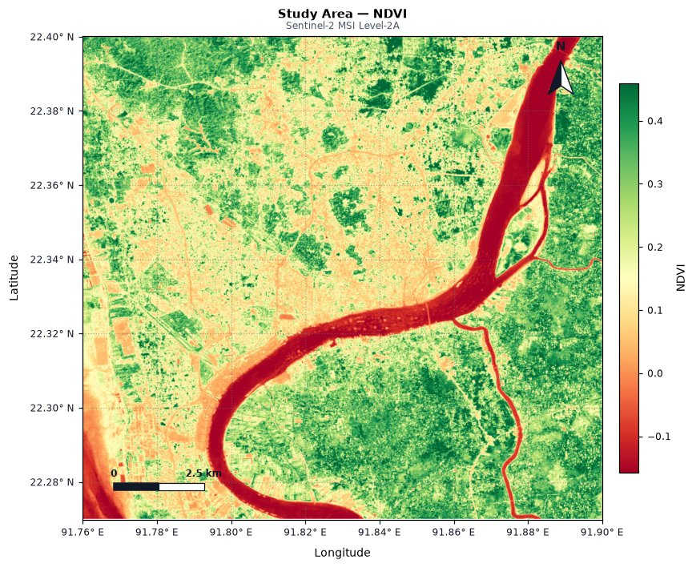

Tutorial: Making Maps with GeoFlow
This tutorial builds seven publication-ready maps of Chattogram, Bangladesh from free Sentinel-2 imagery. Every map on this page was produced by the code shown, exactly as written.
You'll learn to:
- load a cloud-free satellite composite in a few lines
- make true-colour and index maps with north arrows, scale bars and coordinates
- style the graticule (coordinate grid) for journals
- make classified maps with legends, and vector (polygon) maps
- combine maps into multi-panel figures
- design a layout interactively in a notebook
Requirements: pip install "geoflow[stac] @ git+https://github.com/ramiz-moktader/geoflow.git" and an internet connection. No account or login is needed, because the imagery comes from Microsoft Planetary Computer. It runs in Jupyter, VS Code or Google Colab.
Step 1: Choose your area
Maps start with an area of interest (AOI). gf.Rectangle takes [west, south, east, north] in degrees:
import geoflow as gf
aoi = gf.Rectangle([91.76, 22.27, 91.90, 22.40], crs="EPSG:4326") # Chattogram city and the Karnaphuli river
Use your own area
Find coordinates by right-clicking a spot in Google Maps, or draw a box at bboxfinder.com. Keep the box under about 30 × 30 km while you experiment: larger areas take longer to load. You can also load a boundary file with gf.Geometry.from_file("study_area.geojson").
Step 2: Load a cloud-free Sentinel-2 composite
s2 = gf.ImageCollection.from_stac(
collection="sentinel-2-l2a",
catalog="planetary-computer",
geometry=aoi,
start="2024-01-01",
end="2024-02-29", # dry season: fewest clouds over Bangladesh
bands=["B02", "B03", "B04", "B08", "SCL"], # blue, green, red, near-infrared, scene classification
resolution=20, # pixel size in metres
)
image = s2.mask_clouds().median().clip(aoi)
What each part does:
from_stac(...)finds every Sentinel-2 scene over the AOI in those dates (24 here) and streams only the pixels inside the box.mask_clouds()uses theSCLband to remove cloudy and shadowed pixels from each scene.median()takes the middle value of each pixel across all scenes, which removes any leftover clouds.clip(aoi)trims the result to your box.
Step 3: True-colour map
image.plot_map(
bands=["B04", "B03", "B02"], # red, green, blue
title="Chattogram, Bangladesh",
subtitle="Sentinel-2 L2A true colour, Jan–Feb 2024 median",
save_path="01_true_color.png",
)

One call adds the north arrow, a scale bar whose length is computed for your latitude, degree-formatted coordinates and a light grid. Colours are stretched automatically between the 2nd and 98th percentile, so the image is never too dark or washed out. save_path writes a 300 DPI file by default: change it with dpi=600 for print.
Step 4: Vegetation index map with a colour bar
ndvi = image.ndvi() # finds the NIR (B08) and red (B04) bands automatically
ndvi.plot_map(
cmap="RdYlGn", # red = bare/water, green = vegetation
vmin=-0.2, vmax=0.8, # fix the colour range so different maps are comparable
title="Vegetation index (NDVI)",
colorbar_label="NDVI",
save_path="02_ndvi.png",
)

Other indices work the same way: image.ndwi() (water), image.ndbi() (built-up), image.evi(), image.nbr() (burn severity). Any Matplotlib colour map name works for cmap.
Step 5: Style the graticule for publication
Journals often want coordinates on all four sides, latitude labels rotated, degrees-and-minutes, and a serif font:
ndvi.plot_map(
cmap="RdYlGn", vmin=-0.2, vmax=0.8,
title="NDVI with a four-sided graticule",
colorbar_label="NDVI",
show_top=True, show_right=True, # labels on all four sides
lat_orientation="vertical", # rotate latitude labels to run along the frame
coord_format="DM", # degrees and minutes: "DD", "DM" or "DMS"
corner_threshold=0.1, # hide labels within 10% of a corner so they don't collide
tick_fontfamily="serif",
tick_fontsize=8,
grid_style="--", grid_alpha=0.3, # dashed, faint grid lines
north_loc="top-left", # move the north arrow ...
scale_loc="bottom-right", # ... and the scale bar
save_path="03_graticule.png",
)

Overlapping corner labels?
Labels near the corners are hidden when they fall within corner_threshold of a corner (2.5% of the map by default). Rotated or long labels such as 22° 16.8' N need more room, so raise it to 0.1 as above. Use prune_corners="x" or "y" to hide only one axis's corner labels, or graticule_interval=0.02 to set the label spacing in degrees yourself.
Step 6: Classified map with a legend
Turn continuous values into classes with discrete_bins (the class boundaries) and discrete_colors, and label them with legend_labels:
classes = {
"Water": "#2563eb",
"Built-up / bare": "#d6d3d1",
"Sparse vegetation": "#bef264",
"Dense vegetation": "#15803d",
}
ndvi.plot_map(
discrete_bins=[-1.0, 0.0, 0.2, 0.5, 1.0], # 4 classes need 5 boundaries
discrete_colors=list(classes.values()),
legend_labels=classes,
legend_title="Land cover (NDVI classes)",
legend_loc="lower right",
title="Simple land-cover classes",
save_path="04_classes.png",
)

Boundaries are inclusive on the left: here 0.0 ≤ NDVI < 0.2 is "Built-up / bare". These NDVI thresholds are a simple illustration. For a real land-cover map, train a classifier on labelled samples (see Machine Learning & Validation).
Step 7: Vector map: summarise by hexagon
plot_map also works on vector data (gf.FeatureCollection). Pass the column to colour by in bands and legend=True for a colour bar. Here we cover the area with 1.5 km hexagons and colour each by the NDVI at its centre:
hexes = gf.spatial.block(aoi, size=1500, unit="meters", shape="hexagonal")
gdf = hexes.to_geodataframe()
# NDVI value at each hexagon's centre point (centroids computed in metres, UTM zone 46N)
centres = gf.FeatureCollection(gdf.set_geometry(gdf.to_crs(32646).centroid.to_crs(4326)))
gdf["mean_ndvi"] = centres.sample_raster(ndvi).to_geodataframe()["NDVI"].values
gf.FeatureCollection(gdf.dropna(subset=["mean_ndvi"])).plot_map(
bands=["mean_ndvi"],
cmap="YlGn",
legend=True,
colorbar_label="Mean NDVI",
title="NDVI at hexagon centres (1.5 km cells)",
save_path="05_hexagons.png",
)

The same works for any polygons, lines or points: district boundaries from a shapefile (gf.FeatureCollection("districts.shp")), GPS survey points, or GEDI LiDAR shots.
Step 8: Multi-panel figure
Pass a Matplotlib axis with ax= to place several maps in one figure:
import matplotlib.pyplot as plt
fig, (ax1, ax2) = plt.subplots(1, 2, figsize=(11, 4.8))
image.plot_map(bands=["B04", "B03", "B02"], title="(a) True colour", ax=ax1,
graticule_interval=0.04)
ndvi.plot_map(cmap="RdYlGn", vmin=-0.2, vmax=0.8, title="(b) NDVI", colorbar_label="NDVI",
ax=ax2, graticule_interval=0.04,
north_arrow=False, scale_bar=False, show_left=False) # avoid repeating elements
fig.savefig("06_two_panel.png", dpi=300, bbox_inches="tight")

graticule_interval=0.04 puts a label every 0.04° so the smaller panels don't get crowded. Shared elements such as the north arrow and scale bar only need to appear once.
Step 9: Design the layout interactively
In a notebook (Jupyter, VS Code or Google Colab), edit_layout() opens a layout designer, similar to the print layout view in ArcGIS Pro or QGIS. This example loads a GeoTIFF you already have, here one uploaded to Colab:
import geoflow as gf
img = gf.Image("/content/Sentinel2_Chattogram_2025_01_25.tif")
# Launch the interactive Layout Editor
editor = img.ndvi().edit_layout(
title="Study Area — NDVI",
subtitle="Sentinel-2 MSI Level-2A",
cmap="RdYlGn",
)
# Display the editor widget in the notebook
editor
The editor shows a live preview next to tabs of controls:
| Tab | What you can change |
|---|---|
| 📄 Page Setup | Canvas size (square, landscape, Nature single/double column), title and subtitle |
| 🧭 Carto | North arrow and scale bar: show/hide, corner or exact X/Y position, size, scale bar length |
| 🗺️ Frame | Zoom, pan, or type the exact map extent in coordinates |
| 🌐 Graticule | Coordinate labels on each side, orientation, decimal precision, grid style |
| 🎨 Colors | 15+ colour maps, stretch limits, colour bar |
| 💾 Export Canvas | Paper size and orientation, save at 300 or 600 DPI, one-click download in Colab, and 📋 Python Code to get the equivalent plot_map(...) call |
The preview starts from the same defaults as plot_map. With the settings above, the starting map looks like this:

From the editor to a script
When the layout looks right, use Export Canvas → 📋 Python Code and paste the plot_map(...) call into your script. Your figure is then reproducible and can be regenerated whenever the data changes.
Using your own GeoTIFF
gf.Image("file.tif") opens any GeoTIFF, for example one exported from Google Earth Engine or downloaded from USGS EarthExplorer. To save GeoFlow imagery as a GeoTIFF, use image.save("composite.tif"). In Colab, upload files with the 📁 Files panel on the left; they appear under /content/.
Quick reference
| Goal | Parameters |
|---|---|
| Choose bands / colours | bands=[...], cmap=, vmin=, vmax= |
| Titles | title=, subtitle=, title_fontsize=, subtitle_fontsize= |
| North arrow | north_arrow=, north_loc= ("top-right", "top-left", ...), north_pos=(x, y), north_size= |
| Scale bar | scale_bar=, scale_loc=, scale_pos=(x, y), scale_fraction=, scale_custom_length_m= |
| Coordinates | coord_format= ("DD", "DM", "DMS"), degree_precision=, graticule_interval=, show_top/bottom/left/right= |
| Label style | lat_orientation=, lon_orientation=, tick_fontsize=, tick_fontfamily=, tick_color= |
| Corner collisions | prune_corners= (True, "x", "y", "both"), corner_threshold= |
| Grid | grid=, grid_style=, grid_color=, grid_alpha= |
| Colour bar / legend | colorbar=, colorbar_label=, legend=, legend_labels=, legend_title=, legend_loc= |
| Classes | discrete_bins=, discrete_colors= |
| Output | save_path=, dpi=, ax= (multi-panel) |
The full list with defaults is in the Visualization & Cartography API reference.